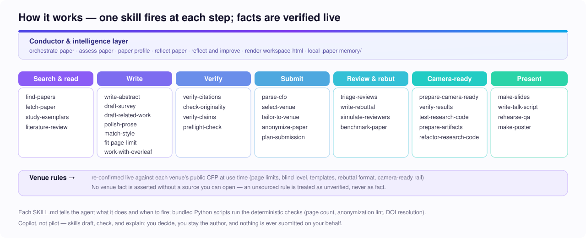

Turn an idea into a staged plan.
Use paper-profile and orchestrate-paper to set context, sequence the work, and keep checkpoints visible.
A public package of AI agent skills for literature discovery, academic writing, citation verification, venue checks, submissions, rebuttals, camera-ready work, artifacts, slides, posters, and research Q&A.
npx skills add ShaishavMaisuria/research-paper-lifecycle-skills
Start broad with an orchestrated lifecycle, or jump straight into the exact task that is slowing the paper down.
Use paper-profile and orchestrate-paper to set context, sequence the work, and keep checkpoints visible.
Verify citations, scan originality, audit claims, run mock reviews, and produce one paper-health report.
Parse CFPs, adapt the draft, anonymize, plan deadlines, and lint desk-reject risks against current guidance.
Search by task, stage, or skill name. Every item opens the public `SKILL.md` so users can inspect triggers, guardrails, references, and helper scripts before installing.
Showing 42 skills
The package is designed for handoffs: discover, write, verify, submit, respond, publish, and present. Use one skill directly or let an agent orchestrate the sequence.

These are the high-signal paths users can copy into an agent or follow step by step.
paper-profile -> literature-review -> write-abstract -> draft-related-work -> polish-prose
parse-cfp -> tailor-to-venue -> anonymize-paper -> preflight-check
verify-citations -> check-originality -> benchmark-paper -> simulate-reviewers -> assess-paper
prepare-camera-ready -> make-slides -> write-talk-script -> rehearse-qa -> make-poster
The package is not locked to one AI tool. It uses the Agent Skills structure so compatible agents can install all skills or a selected skill.
npx skills add ShaishavMaisuria/research-paper-lifecycle-skills
npx skills add ShaishavMaisuria/research-paper-lifecycle-skills --skill preflight-check
npx skills add ShaishavMaisuria/research-paper-lifecycle-skills --agent codex
npx skills add ShaishavMaisuria/research-paper-lifecycle-skills --agent cursor
npx skills add ShaishavMaisuria/research-paper-lifecycle-skills --agent gemini
Directory and AI-search summary: llms.txt
The public package ships instructions, guardrails, links, and helper scripts. It does not bundle private research material or copyrighted paper corpora.
Skills linked from the README and installable through the Agent Skills CLI.
Bundled papers, copied abstracts, private reviews, generated caches, or benchmark fixtures.
Venue, policy, citation, and paper metadata checks are designed to re-verify from public sources.
A few good links beat a thousand bad ones. These share targets are for people who care about research workflows, not drive-by traffic.
Browse the public source, inspect every skill, install the package, or open an issue for a new research workflow.